Actividades:
- ACTIVIDAD 1:
Se realizaron operaciones numericas simples con diferentes variables.
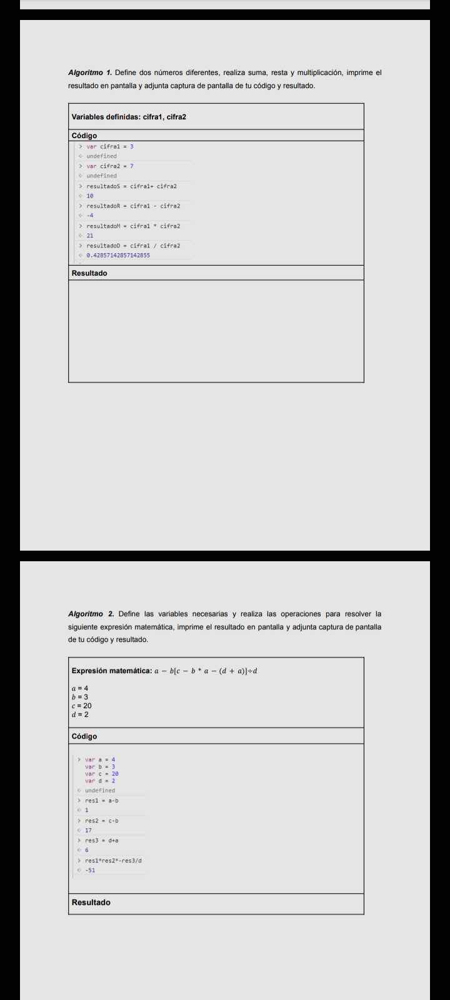
- ACTIVIDAD 2:
Se usaron formularios donde se recogian datos, se comparaban y arrojaban resultados mediante un alert.
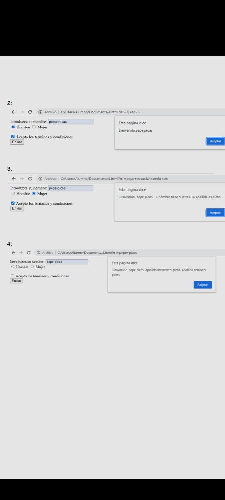
- ACTIVIDAD 3:
Variables numericas se comparaban usando ifs para dar resultados si fuesen mayores, menores o iguales.
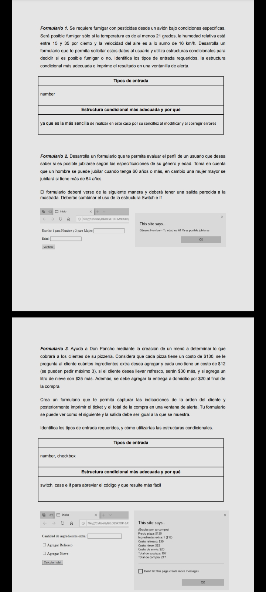
- ACTIVIDAD 4:
Se introduce una variable numerica que, mediante ciclos, arrojaba resultados simples como una tabla numerica.
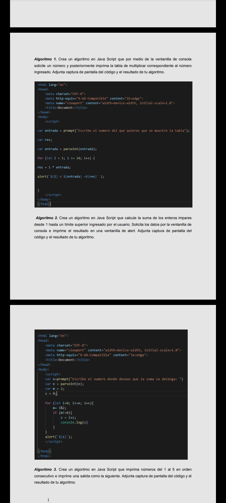
- ACTIVIDAD 5:
Tambien por medio de ciclos se usaban variables para detener secuencias y se programaban relaciones como las tablas del 1 al 9.
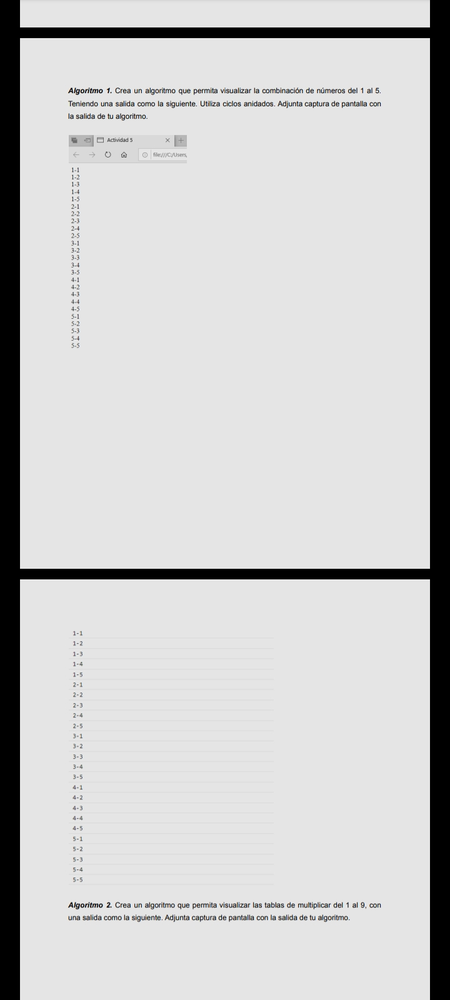
- ACTIVIDAD 6:
Con arrays se experimento los usos que se pueden dar, como agregar, quitar, u ordenarlos.
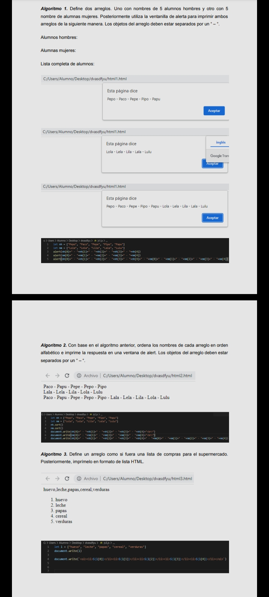
- ACTIVIDAD 7:
Utilzando botones y formularios se creo una calculadora convencional y se arrojaban resultados usando teoremas u formulas matematicas.
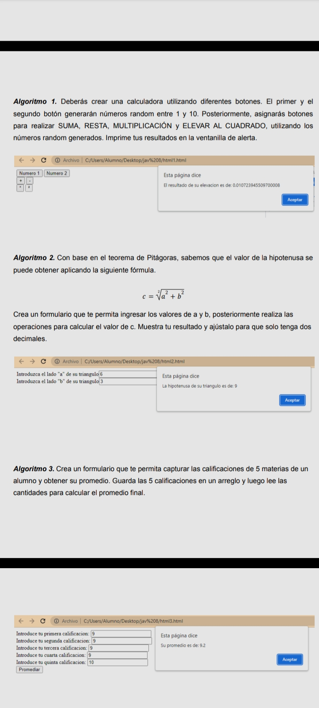
- ACTIVIDAD 8:
Con un formulario donde se pueden introducir horas se calcula el tiempo transcurrido y se da un resultado.
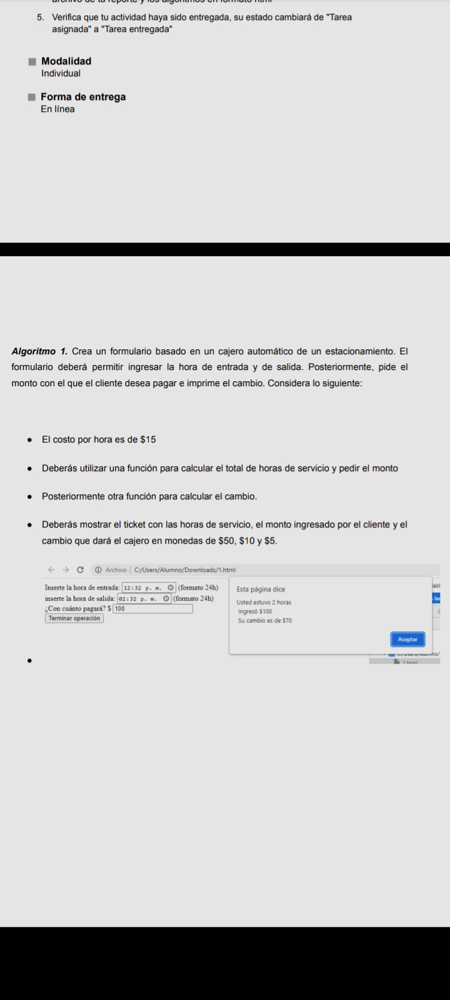
- ACTIVIDAD 9:
Se usaron formularios e if para elegir variables como tiendas, donde en cada una ciertos precios varian.
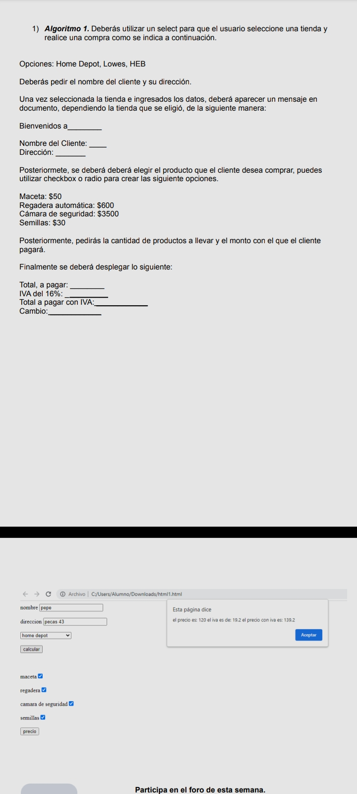
- ACTIVIDAD 10:
Modificando variables en css se le dio diferentes formatos y efectos a un string.
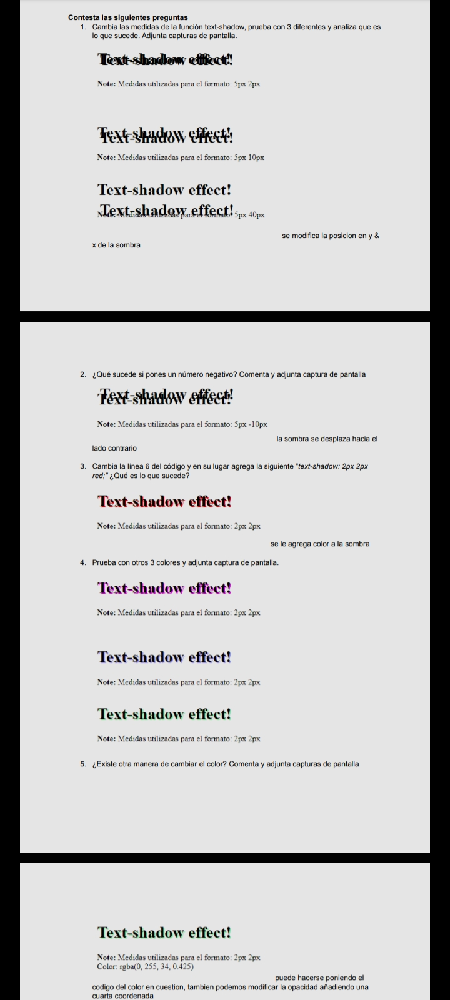
- ACTIVIDAD 11:
Usando un campo de texto con fondo se modifico el tamano e imagen.
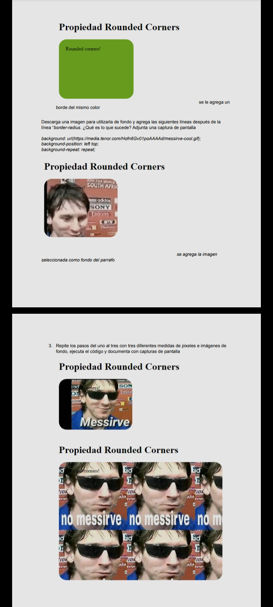